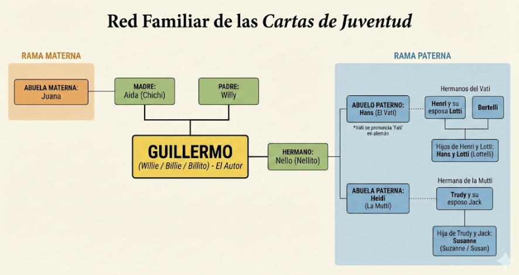
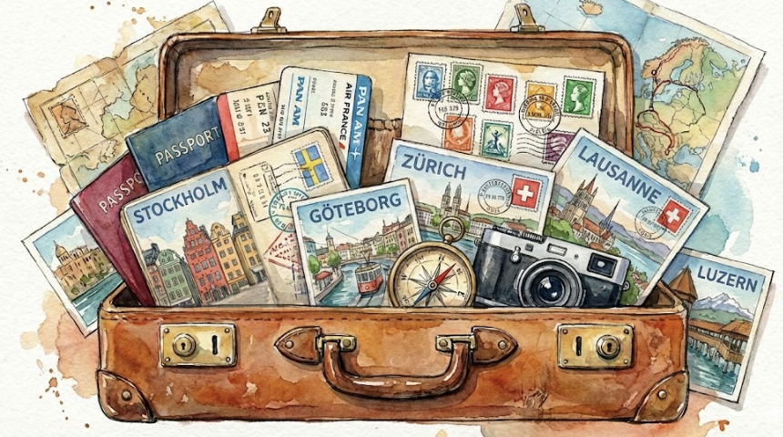

CONTEXTO FAMILIAR


Queridos mami y papi: Son las 8:30 y ya estoy escribiéndoles. Me vine a un bar a tomar el desayuno así tengo más tiempo antes que empiece el colegio...
...Como se escuchaba mal entendí algunas cosas por la mitad. Creo que dijo 100 dólares. Si me empieza a mandar ya, puedo aguantar bien hasta diciembre.
Mami no llorés que ya vuelvo, además escribo bastante no te podes quejar. Esta tarde tengo que llevar los certificados a la Universidad...

Queridos mami y papi: Este mañana me olvidé contarles el fenómeno telepático que tuve. Estaba durmiendo cuando de repente sentí que estaba hablando con mami por teléfono...
Tengo dos fotos de un piso que se las voy a mandar junto con esta carta. El pelo me lo corto el domingo que viene o el sábado, pero la barba NO...
Ah! y el miércoles pasado fuimos a Montreux que hay un festival de jazz... Voy a aprender bien bien el francés.

Vati: Abuelo paterno.
Ayer recibí el aerograma del hospital. Esta es mi última semana de civil así que trato de aprovecharla al mango...
Chers papa et chère maman: Papá, ayer viernes recibí tu carta del 30.5.72. Gracias por el envío de los 100 u$s...
Mami el otro día le cambié todos los botones a la camisa negra, 12 botones pegué, ¿qué te parece? En definitiva el único que salió pintón fui yo.

Queridos padres: Hoy rebozo de alegría, han llegado los 100 dólares. Esta tarde los fui a buscar eran 382 francos. Ahora estoy más tranquilo. Esta noche cuando vuelva a casa les pongo cuánto dinero en efectivo me queda.
Bueno, como ayer mandé la otra carta, en dos días no hay ninguna novedad. Ah si, hoy me pasé desde las 1 1/2 hasta las 3 1/2 planchando, como se aprecia una madre en estas condiciones. ¡Ah! Madre hay una sola !! y padre también.
Después del 10 de julio escriban a esta dirección: [Dirección tachada]. Todavía sigo esperando los prospectos del colegio para Nellito. Muchos besos, mami y espero no desesperes.
Nota: Me quedan 1300 francos. Ya pagué el alquiler este mes.
Nellito: Lionel, hermano de Guillermo.
Servicio: Referencia al servicio militar o civil obligatorio.
